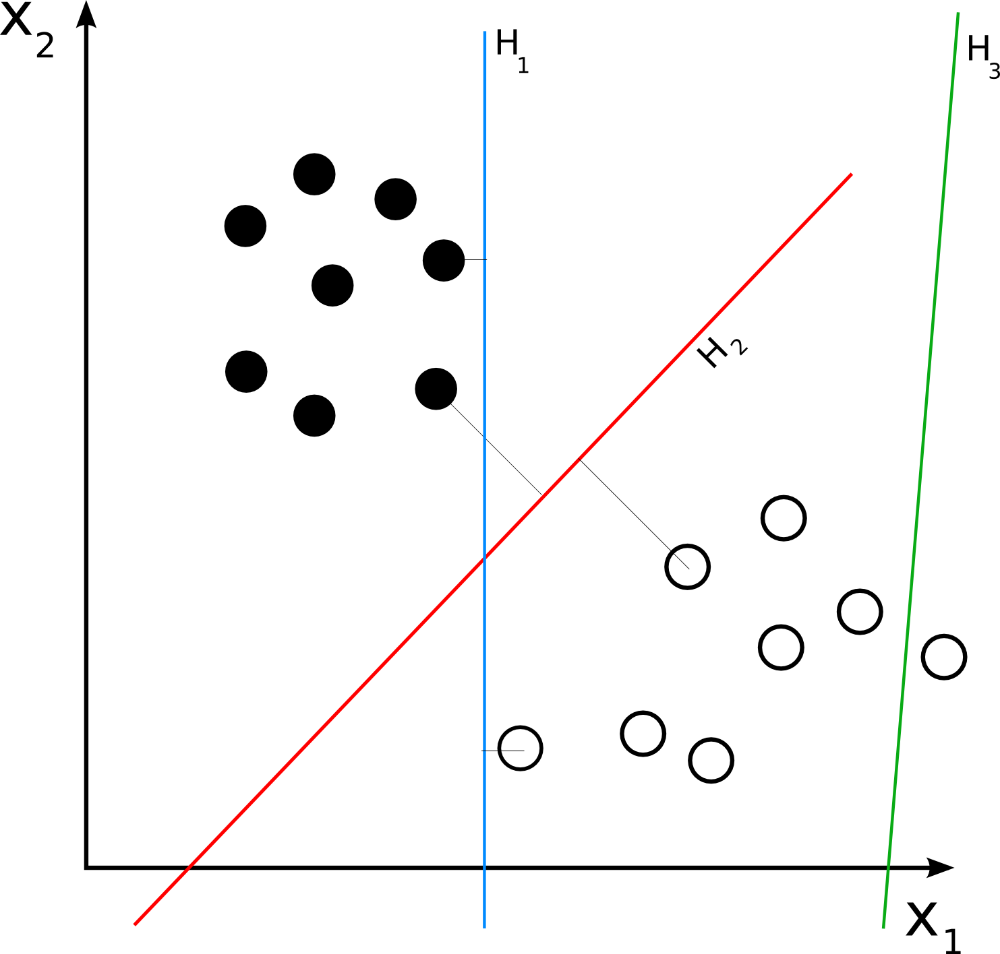
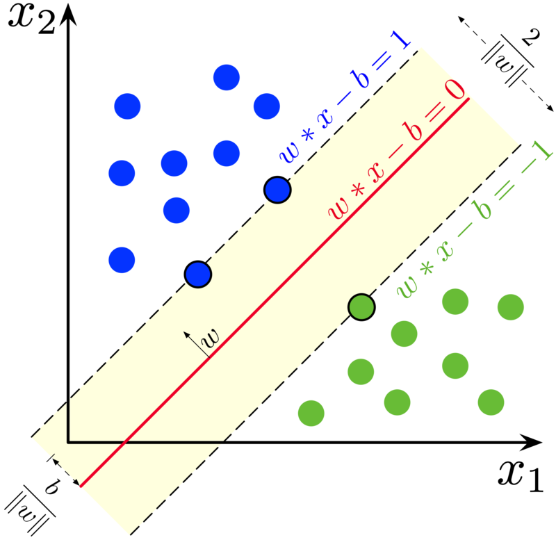
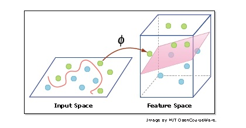

Support-vector machines are supervised learning models with associated learning algorithms that analyze data used for classification and regression analysis.
Suppose some given data points each belong to one of two classes, and the goal is to decide which class a new data point will be in.

In the case of support-vector machines, a data point is viewed as a p-dimensional vector, and we want to know whether we can separate such points with a ( p − 1 ) dimensional hyperplane.
There are many hyperplanes that might classify the data.
One reasonable choice as the best hyperplane is the one that represents the largest separation, or margin, between the two classes
So we choose the hyperplane so that the distance from it to the nearest data point on each side is maximized
If such a hyperplane exists, it is known as the maximum-margin hyperplane and the linear classifier it defines is known as a maximum margin classifier.
We are given a training dataset of n points of the form (x1,y1),(x2,y2),(x3,y3), ....(xn,yn)
where the yi are either 1 or −1, each indicating the class to which the point xi belongs.
We want to find the "maximum-margin hyperplane" that divides the group of points xi for which yi = 1 from the group of points for which yi = − 1, which is defined so that the distance between the hyperplane and the nearest point xi from either group is maximized.
Any hyperplane can be written as the set of points x satisfying w.x - b = 0 where ⋅ denotes the dot product. The vector w is a Surface normal | normal vector: it is perpendicular to the hyperplane. x is the feature vector, and b is the bias
Anything above the decision boundary should have label 1 i.e w.x-b >0 will have corresponding yi= 1. Similarly, anything below the decision boundary should have label−1 i.e w.x-b < 0 will have corresponding yi= -1
If the training data is linearly separable, we can select two parallel hyperplanes that separate the two classes of data, so that the distance between them is as large as possible. The region bounded by these two hyperplanes is called the "margin", and the maximum-margin hyperplane is the hyperplane that lies halfway between them, these hyperplanes can be described by the equations
w.x-b = 1 (anything on or above this boundary is of one class, with label 1)
w.x-b = -1 (anything on or below this boundary is of the other class, with label −1)
We want to choose the w and b to maximize the margin

By using geometry, we find the distance between these two hyperplanes is 2/ ‖ w ‖, so we want to minimize ‖ w ‖
We also have to prevent data points from falling into the margin, we add the following constraint: for each i either w.xi+b >= 1 for xi of the first class(ie yi= 1) or w.xi+b <= -1 for xi of the second class(ie yi= -1)
These constraints state that each data point must lie on the correct side of the margin.
This can be rewritten as yi ( w.xi - b ) ≥ 1 , for all 1 ≤ i ≤ n .
We can put this together to get the optimization problem
"Minimize(in w, b) ||w||
subject to yi ( w. xi + b ) ≥ 1 for i = 1 , … , n "
the max-margin hyperplane is completely determined by those xi that lie nearest to it. These xi are called support vectors.
Consider the case that your data isn’t perfectly linearly separable. For instance,maybe you aren’t guaranteed that all your data points are correctly labelled, soyou want to allow some data points of one class to appear on the other side ofthe boundary.
We can introduceslack variables- an Ei≥0 for each xi.
yi ( w. xi + b ) ≥ 1-Ei, for all 1 ≤ i ≤ n
Some problems can’t be solved using linear hyperplane
It is not possible to find a hyperplane or a linear decision boundary for some classification problems. If we project the data in to a higher dimension from the original space, we may get a hyperplane in the projected dimension that helps to classify the data.

Mapping your data vectors,xi, into a higher-dimension (even infinite) featurespace may make them linearly separable in that space (whereas they may notbe linearly separable in the original space)
As we shown in the above figure, it is impossible to find a single line to separate the two classes (green and blue) in the input space. But, after projecting the data in to a higher dimension (i.e. feature space in the figure), we could able to find the hyperplane which classifies the data. Kernel helps to find a hyperplane in the higher dimensional space without increasing the computational cost much. Usually, the computational cost will increase, if the dimension of the data increases.
Linear Kernel
Polynomial Kernel
Radial Basis Function Kernel